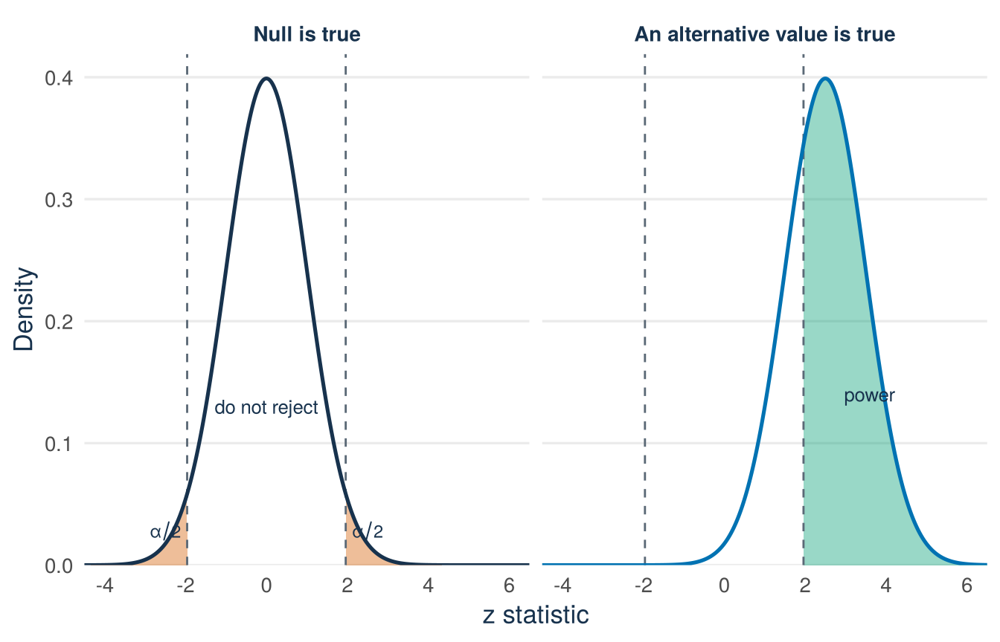

Lecture 10: Testing decisions, errors, power, and the road to regression
By the end of Lecture 10, you can
rewrite benchmark and comparison questions as tests of a zero contrast
complete and communicate a two-sided test using the seven-step workflow
distinguish a p-value, a significance level, and a test decision
describe Type I error, Type II error, and power in context
interpret a two-sided p-value and connect a 95% confidence interval to a 5% two-sided test
separate statistical significance from magnitude, practical importance, and causality
interpret the zero-null test printed for a regression coefficient.
Must know
Be able to do yourself:
explain a p-value in one sentence
make the decision at 5% and link it to the 95% interval
test a proportion by hand with the null standard error
describe a Type I and a Type II error in context and name two ways to raise power
read a regression row: estimate, standard error, t, p-value, interval.
Enough to recognise:
the critical-value rule: reject \(H_0\) at 5% when \(|t|\ge t_{0.975,\,df}\)
the power figure.
Driving question
Launch the product or wait. Approve the loan or decline. Decisions made from data can be wrong in two directions, and the two mistakes usually cost very different amounts.
Every test can be wrong in two ways. Which error is which, what makes errors rarer, and how does all of this reappear in a regression table?
Before class
Total preparation time: about 25 minutes.
Minimum path: the video preparation and the prediction. Full path: everything in this section.
Reactivate (8 minutes). Lecture 9 ended with the t statistic for the equity gap, \(t=-2.91\) with 99 degrees of freedom.
Write the two hypotheses of that test.
Say in one sentence what the number \(-2.91\) measures.
Guess: if the true gap were zero, would a t statistic this far from zero be common or rare?
Check your preparation
\(H_0:\delta=0\) against \(H_1:\delta\ne0\), where \(\delta\) is the population mean of the equity offered minus 15. The statistic says that the estimated gap lies 2.91 standard errors below zero. Such a value would be rare: about 95% of a t distribution with 99 degrees of freedom lies within 1.98 of zero. The p-value says exactly how rare. It is the first topic of the lecture material.
Predict (2 minutes). Answer the one-click Wooclap question posted on Canvas before you come to class: a test at \(\alpha=0.05\) returns \(p=0.20\). Has the study shown that the null is true: yes, no, or cannot tell? Commit to an answer. You find the answer in the lecture material.
An advisor said that founders offer 15% of their company on average. Your sample of 100 pitches says 12.76%. Should you tell the advisor that the number is wrong? And what does it cost you if you are the one who is wrong? Lecture 9 ended with a t statistic and no decision. This section adds the p-value and the decision rule. It then gives one workflow for every test and names the two ways a decision can be wrong. It ends with the same test in a regression table, the main object of QM Intermediate.
Lecture 9 compared the mean equity offered (equity_offered_pct) with the benchmark of 15 percentage points, using the random sample of 100 pitches (seed 123). The estimated gap was \(-2.24\) points with standard error \(0.77\), so \(t=-2.91\) with 99 degrees of freedom. The estimate lies almost three standard errors below zero. The open question is how surprising such a value would be if the true gap were zero. The p-value answers it.
A two-sided p-value uses both tails
Definition
p-value. The probability, calculated as if \(H_0\) were true, of a test statistic at least as far from zero as the observed one, in either direction. A small p-value means that the data would be surprising if \(H_0\) were true.
For the equity gap, with \(t_{obs}\) the observed t statistic:
Figure 13.1: The t distribution with 99 degrees of freedom under the null hypothesis. Dashed lines mark statistics as far from zero as the observed t = −2.91. The two orange tail areas together are the two-sided p-value, about 0.005.
Read Figure 13.1 with the five-step sequence. (1) Unit and variables: the curve is not data. It is the distribution of the t statistic if the null were true. The horizontal axis is the possible t statistic. (2) Scales: the vertical axis is density, so probability is area. (3) One element: the dashed lines mark \(-2.91\) and \(+2.91\), statistics as far from zero as the one observed. (4) Pattern: the two orange tail areas beyond the dashed lines are tiny, together about 0.0045. If the true mean gap were zero, a sample this far from zero would occur in roughly 5 of every 1,000 samples. (5) Limits: that number is not the probability that \(H_0\) is true, and it is not the size of the gap.
The convention is to reject \(H_0\) when the p-value is at most 0.05. This threshold is called the significance level.
Definition
Significance level \(\alpha\). The threshold for the test decision, fixed before the data are inspected, usually \(\alpha=0.05\). Reject \(H_0\) when \(p\le\alpha\). Do not reject \(H_0\) when \(p>\alpha\).
Here \(p=0.0045<0.05\), so reject \(H_0\). The random sample provides evidence that the mean equity offered in the recorded-pitch frame differs from 15 percentage points. The negative estimate indicates that it is lower.
The same decision can be read from the t statistic. Reject \(H_0\) at the 5% level when \(|t|\) is at least \(t_{0.975,\,df}\), the critical value of Lecture 9. In symbols, \(|t|\ge t_{0.975,\,df}\). That is the same decision as \(p\le0.05\).
Here \(|t|=2.91\) is larger than \(t_{0.975,\,99}=1.984\), so the critical-value rule also rejects \(H_0\).
The confidence interval and test tell the same story
For the same two-sided t procedure:
reject \(H_0:\delta=0\) at level \(\alpha\) exactly when the \(100(1-\alpha)\%\) confidence interval excludes zero
do not reject when the interval includes zero.
Here the gap interval \((-3.77,\,-0.71)\) from Lecture 9 excludes zero, in line with the rejection. The interval adds information that the p-value does not give. It shows the direction, the plausible size, and the precision of the difference. In this course and in QM Intermediate, always report the estimate and the interval together with the test decision.
Try it: read the decision straight from an interval
Try this with your neighbour first. A colleague reports a 95% confidence interval for a mean gap: \((-1.4,\,3.8)\) percentage points (invented numbers). The report gives no t statistic and no p-value.
Step 1 (given). The two-sided t test rejects \(H_0:\delta=0\) at 5% exactly when the 95% interval excludes zero.
Step 2 (you). Does this interval exclude zero? State the test decision without computing anything.
Step 3 (you). What may you conclude about the population mean gap, and what may you not conclude?
Check your answer
Zero lies inside \((-1.4,\,3.8)\), so the 5% two-sided test does not reject \(H_0:\delta=0\). The data are compatible with a zero gap, and also with gaps as large as 3.8 points in one direction and 1.4 in the other. You may not conclude that the gap is zero. “Do not reject” is not “accept”. The workflow below returns to this difference.
Why zero is the universal benchmark
Many questions about data ask whether a population contrast is zero:
difference from a target: \(\delta=\mu-15\)
difference in probabilities: \(\delta_p=p-0.50\)
difference between two group means: \(\mu_1-\mu_0\)
a regression slope: \(\beta_j\).
In every case, “no difference” or “no linear association” becomes
Here \(\theta\) stands for any of the four parameters in the list. A test against a non-zero benchmark can always be rewritten as a test of a contrast equal to zero, as with the gap in Lecture 9. The tests in a regression table have the same structure.
The seven-step testing workflow
Use the same sequence for every test:
Define the population parameter and its units.
State \(H_0\) and the two-sided \(H_1\) before you inspect the result.
Check the conditions on the sample and on the shape of the data.
Calculate the estimate and its SE. For a proportion test, calculate the SE with the null value \(p_0\).
Standardise: \((\text{estimate}-0)/\text{SE}\).
Calculate the two-sided p-value and compare it with the significance level \(\alpha\) that was fixed in advance.
Report the estimate, its uncertainty, the decision, the meaning in context, and the limits.
The significance level \(\alpha\) and the p-value are different things. \(\alpha\) is a rule, fixed in advance. The p-value is a result, calculated from the observed data as if \(H_0\) were true.
If \(p\le\alpha\), reject \(H_0\). If \(p>\alpha\), do not reject \(H_0\), and do not say “accept \(H_0\)”. This answers the prediction question from the preparation: a study with \(p=0.20\) has not shown that the null hypothesis is true. The study may only be too imprecise to tell a real non-zero parameter from zero. The section on power below explains this.
Example 13.1 (Worked example: a proportion test by hand) This is an invented example. An accelerator claims that half of its alumni launch a trading venture within a year. In a random sample of 400 former participants, 232 had launched. Let \(p\) be the launch proportion among all alumni and define \(\delta_p=p-0.50\). Test \(H_0:\delta_p=0\) against \(H_1:\delta_p\ne0\) at 5%, step by step.
Estimate.\(\hat p=232/400=0.58\), so the estimated gap is \(\widehat\delta_p=0.58-0.50=0.08\), eight percentage points.
Conditions under the null. The test uses a normal approximation, so check the success-failure rule of Lecture 8: \(np\ge10\) and \(n(1-p)\ge10\). Lecture 8 gives the reason for the rule. In a test, use the null value \(p_0\): \(np_0=400(0.50)=200\) and \(n(1-p_0)=200\). Both are far above 10, so the normal approximation can be used.
Null SE. Under \(H_0\) the true proportion is 0.50, so \(\operatorname{SE}_0=\sqrt{0.50(0.50)/400}=\sqrt{0.25/400}
=\sqrt{0.000625}=0.025\).
Standardise.\(z=0.08/0.025=3.20\). The observed gap lies 3.2 null standard errors above zero. The statistic is called \(z\) here because it is compared with the standard normal distribution.
p-value and decision. The two-sided p-value is \(2\,P(Z\le-3.20)\approx 0.0014 < 0.05\), so reject \(H_0\). The sample provides strong evidence that the launch proportion among all alumni differs from 50%. The positive estimate places it above 50%.
Report the interval too. A decision alone is not a report. The large-sample 95% interval uses the estimated SE: \(0.58\pm1.96\sqrt{0.58(0.42)/400}=0.58\pm0.048=(0.532,\,0.628)\). It excludes 0.50, in line with the test.
Look again at step 4 of the workflow. The SE was calculated with \(p_0=0.50\), not with \(\hat p\). The test measures how surprising the sample would be if \(H_0\) were true, so the null value supplies the spread.
In R: the Shark Tank deal proportion
Tutorial 4, Task 2 uses the code of this section and the next. Read both sections before the tutorial.
Now apply the same workflow to the random sample of 100 pitches from Lecture 9. Is the proportion of pitches that end with a deal (deal_on_show) in the recorded-pitch frame different from 50%? The code builds every object step by step:
In the sample, 64 of the 100 pitches end with a deal, so \(\hat p=0.64\). The estimate is \(\widehat\delta_p=0.14\), fourteen percentage points. The null SE is \(\sqrt{0.50(0.50)/100}=0.05\), the statistic is \(z=2.80\), and the two-sided p-value is about 0.005. The success-failure rule holds under the null: \(np_0=50\) and \(n(1-p_0)=50\). Reject the zero-gap null at 5%. The random sample provides evidence that the deal proportion in the recorded-pitch frame differs from 50%, and the positive estimate places it above 50%.
Interval and test: report both
Step 7 of the workflow says a decision alone is not a report. A large-sample 95% interval for the proportion uses the estimated SE:
The proportion interval is approximately \((0.546,\,0.734)\). The equivalent gap interval is \((0.046,\,0.234)\), which excludes zero and agrees with the test decision here.
Optional: estimated versus null standard errors
The test divided by the null SE \(\sqrt{p_0(1-p_0)/n}=0.050\). The interval used the estimated SE \(\sqrt{\hat p(1-\hat p)/n}=0.048\). The test asks how surprising the sample would be if \(H_0\) were true, so the null value supplies the spread. The interval does not assume \(H_0\), so the data supply the spread. The two procedures are therefore not exactly the same. When a result lies very close to the 5% boundary, the interval and the test can disagree. An interval that always agrees with the test exists, but it is beyond this course. For the mean gap, the interval of Lecture 9 and the t test of this lecture use the same SE, so there they always agree.
and nothing else. The task below gives four sentences that read more into it. All four are wrong.
Try it: correct the four wrong p-value sentences
Try this with your neighbour first. The four sentences are about the launch test of Example 13.1 (\(z=3.20\), \(p\approx 0.0014\)). Each one is wrong. Write a correct version of each sentence.
Sentence 1 (you). “There is only a 0.14% probability that the launch proportion really is 50%.”
Sentence 2 (you). “The result has a 0.14% probability of being due to chance.”
Sentence 3 (you). “Such a tiny p-value shows that the launch proportion is far above 50%.”
Sentence 4 (you). “The tiny p-value proves that the accelerator causes its alumni to launch ventures.”
Check your answers
A p-value is not \(P(H_0\mid\text{data})\). Correct: “If the launch proportion were exactly 50%, a sample gap at least this far from zero in either direction would occur in about 0.14% of random samples.”
The p-value is calculated under the assumption that \(H_0\) is true and chance alone produced the gap. It is the probability of data this extreme under that assumption. It is not the probability that the assumption holds. Correct: “If chance alone were at work, a gap this large would occur in about 0.14% of random samples.”
A p-value measures surprise, not size. The size is the estimate, 8 percentage points, with an interval around it. A tiny p-value can go together with a tiny gap when \(n\) is very large. Correct: “The launch proportion is estimated at 58%, plausibly between 53.2% and 62.8%.”
A significant result says nothing about the cause. The alumni chose to join the accelerator themselves, so they may differ from other founders in many ways. Correct: “The launch proportion among all alumni differs from 50%.”
Type I error, Type II error, and power
A test is a decision rule, and a decision can be wrong in two ways:
Reality
Reject \(H_0\)
Do not reject \(H_0\)
\(H_0\) true
Type I error
Correct decision
\(H_1\) true
Correct decision
Type II error
Definition
Type I error and Type II error. A Type I error is rejecting \(H_0\) when \(H_0\) is true (a false alarm). A Type II error is not rejecting \(H_0\) when \(H_1\) is true (a missed difference).
The significance level is the probability of a Type I error:
Power. The probability that the test rejects \(H_0\) when \(H_1\) is true: \(\text{power}=P(\text{reject }H_0\mid H_1\text{ true})\). Power is one minus the probability of a Type II error.
Power depends on how far the true parameter lies from zero, so it is always calculated for one given alternative value.
In the launch test of Example 13.1, a Type I error would be to conclude that the launch proportion among all alumni differs from 50% when it is exactly 50%. A Type II error would be to miss a launch proportion that really differs from 50%, for example because the sample was too small.
See the R code for this figure
library(ggplot2)z_grid <-seq(-4.5, 6.5, length.out =1600)critical <-qnorm(0.975)panel_levels <-c("Null is true", "An alternative value is true")test_curves <-rbind(data.frame(z = z_grid, density =dnorm(z_grid, mean =0),panel = panel_levels[1]),data.frame(z = z_grid, density =dnorm(z_grid, mean =2.5),panel = panel_levels[2]))test_curves$panel <-factor(test_curves$panel, levels = panel_levels)rejection <-subset(test_curves, z <=-critical | z >= critical)rejection$side <-ifelse(rejection$z <0, "left", "right")panel_labels <-data.frame(z =c(0, 3.6),density =c(0.13, 0.14),label =c("do not reject", "power"),panel =factor(panel_levels[c(1, 2)], levels = panel_levels))alpha_labels <-data.frame(z =c(-2.5, 2.5),density =c(0.028, 0.028),label =c("alpha/2", "alpha/2"),panel =factor(panel_levels[c(1, 1)], levels = panel_levels))ggplot(test_curves, aes(z, density)) +geom_area(data = rejection, aes(group = side, fill = panel),alpha =0.4) +geom_vline(xintercept =c(-critical, critical), linetype ="dashed",colour ="#5B6976", linewidth =0.5) +geom_line(aes(colour = panel), linewidth =0.9) +geom_text(data = panel_labels, aes(label = label),colour ="#17324D", size =3.4) +geom_text(data = alpha_labels, aes(label = label), parse =TRUE,colour ="#17324D", size =3.1) +facet_wrap(~ panel, scales ="fixed") +scale_fill_manual(values =c("Null is true"="#D55E00","An alternative value is true"="#009E73"),guide ="none") +scale_colour_manual(values =c("Null is true"="#17324D","An alternative value is true"="#0072B2"),guide ="none") +scale_y_continuous(expand =expansion(mult =c(0, 0.05))) +coord_cartesian(xlim =c(-4, 6)) +labs(x ="z statistic", y ="Density") +theme_minimal(base_size =13) +theme(panel.grid.minor =element_blank(),panel.grid.major.x =element_blank(),plot.caption =element_text(colour ="#5B6976"),axis.title =element_text(colour ="#17324D"),strip.text =element_text(colour ="#17324D", face ="bold") )

Figure 13.2: Two-sided testing at α = 0.05. Left: when the null is true, the z statistic follows the dark curve and the orange rejection regions have total probability 0.05, the Type I error rate. Right: when a positive alternative is true, the statistic follows the shifted blue curve. The green area is the power, and the unshaded middle is the Type II error probability. Both panels use the same axes.
In both panels of Figure 13.2, the horizontal axis is the possible z statistic, the vertical axis is density, and probability is area. The dashed vertical lines mark the same two-sided critical values, \(\pm 1.96\). The test rejects \(H_0\) when the statistic falls beyond these lines. This part of the axis is called the rejection region. In the left panel the null is true. The two orange tails have total probability \(\alpha=0.05\), which is the Type I error rate. The test is built to give a false alarm in 5% of samples when \(H_0\) is true. In the right panel one positive alternative value is true, so the curve has shifted to the right. The green area is the power. The probability that remains between the dashed lines is the Type II error rate.
Four changes raise power:
a larger true distance from zero (a difference that is easier to see)
a larger sample (a smaller SE)
less variation in the data (also a smaller SE)
a larger \(\alpha\). This last one has a price. A wider rejection region finds more true differences, but it also raises the Type I error rate.
Optional: one-sided alternatives
This box is not covered in the lecture and is not examined. All tests in this course are two-sided.
A two-sided test asks whether a parameter differs from zero in either direction. A one-sided test asks about one direction only:
Research question
Alternative
Tail that counts
Does the gap differ from zero?
\(H_1:\delta\ne0\)
both tails
Is the gap below zero?
\(H_1:\delta<0\)
left tail
Is the gap above zero?
\(H_1:\delta>0\)
right tail
The t statistic is the same in all three cases. Only the rejection region changes. A one-sided test at \(\alpha=0.05\) puts the whole 5% in one tail, as Figure 13.3 shows.
Figure 13.3: Rejection regions at α = 0.05 for the two-sided and both one-sided alternatives, on the same null t distribution (df = 99). The two-sided test places 2.5% in each tail. A one-sided test moves the full 5% into the tail named by its alternative, so its critical value is closer to zero in that direction.
A one-sided alternative is legitimate only when the direction follows from the research question and is fixed before the data are inspected. Choosing the tail after seeing the estimate doubles the true Type I error rate, from 5% to about 10%.
The one-sided p-value follows from the two-sided one. When the estimate points in the direction of the alternative, it is half the two-sided p-value. When the estimate points in the other direction, it is one minus that half. For the equity gap, \(t=-2.91\) with \(df=99\):
t_gap <--2.906# the t statistic of the equity gapdf_gap <-99c(two_sided =2*pt(-abs(t_gap), df = df_gap),left_sided =pt(t_gap, df = df_gap),right_sided =1-pt(t_gap, df = df_gap))
The two-sided p-value is 0.0045. The left-sided alternative \(H_1:\delta<0\) gives 0.0023, and the right-sided alternative \(H_1:\delta>0\) gives 0.9977.
Preview: the test attached to a regression slope
A regression fits a straight line through a cloud of points. Here the line describes how the equity offered (equity_offered_pct) changes from season to season (season). Its slope says by how much per season on average. R tests every regression coefficient against zero in the way described above. The code fits the line to all 1,441 records of the Shark Tank file:
preview_model <-lm(equity_offered_pct ~ season, data = sharks)summary(preview_model)$coefficients
Estimate Std. Error t value Pr(>|t|)
(Intercept) 20.4565874 0.46442667 44.04697 4.922706e-269
season -0.8241241 0.04752298 -17.34159 2.514546e-61
confint(preview_model)
2.5 % 97.5 %
(Intercept) 19.5455616 21.3676132
season -0.9173458 -0.7309023
One point before you read the output. In Lectures 7 to 9 we sampled 100 records from the file, so the uncertainty came from the random draw. Here the model uses all 1,441 records. The standard error now answers a different question: how much would the slope vary if the same process produced another set of pitches? The recorded pitches are treated as one possible outcome of that process.
Now read the season row. The slope of the line in the population is written \(\beta_1\), and its estimate is \(\hat\beta_1\).
The estimate is \(\hat\beta_1=-0.824\). Each additional season goes together with about 0.82 percentage points less equity offered. For comparison, the mean equity offered in the file is 13.21 points, so this is about 6% of the mean per season. The SE, 0.048, is the sampling uncertainty of the estimate, in the same units. The t value, \(-17.3\), is the estimate divided by the SE. This is step 5 of the workflow. The p-value in the last column belongs to the two-sided test
The p-value is far below 0.05, so reject \(H_0\). The 95% interval \((-0.92,\,-0.73)\) excludes zero, in line with the rejection.
Every column is something you know from Lectures 9 and 10. The row does not say that a later season causes lower offers. Nobody assigned pitches to seasons, so this is an association over time, not a causal effect.
QM Intermediate starts from this row (estimate, SE, t, p-value, interval). It adds the interpretation of coefficients, models with several predictors, and checks of the model.
What a significant result does and does not establish
Significant is not large. A tiny gap can be significant with a lot of data, and a real gap can be missed with little.
Significant is not causal. The test does not know how the data came about.
No test repairs the data. Selection and measurement stay as they were.
What to report, every time: the estimate with its units, the interval, the decision, whether the size matters for the business question, and the limits of the data.
What you can do with it: weigh the two errors before you decide how much evidence you need.
Answering the driving question
The two wrong decisions are rejecting a true null hypothesis (Type I error, with probability \(\alpha\)) and missing a true difference (Type II error, less likely when power is high). Type II errors become rarer with more data, less variation, and larger true differences. Type I errors become rarer with a smaller \(\alpha\), at the price of more Type II errors. In a regression table, each coefficient row is the test of Lectures 9 and 10: estimate, SE, t, two-sided p-value against zero, and interval.
This completes QM Basic. You can now define events and variables on a frame, describe their distributions, work with conditional probabilities, and model sampling variation. You can turn “our sample mean is 12.76” into a claim about a population, with its uncertainty, its decision, and its limits.
A founder’s decision (invented example)
Your sign-up page converts 10% of visitors. You try a new page on 400 visitors and 52 sign up, which is 13%. The null standard error is 0.015, so z = 0.03/0.015 = 2.0 and the two-sided p-value is about 0.046. Now weigh the two errors. Switching pages for nothing costs you almost nothing, because you can switch back. Missing a page that is really better costs you sign-ups every week. The decision: switch. For a kitchen lease the logic turns around. A false alarm there is expensive and hard to undo, so you would ask for more data and stronger evidence before you sign.
Next: Tutorial 4 practises Lectures 9–10 in exam format. The Mock Exam then covers the whole course under exam conditions. QM Intermediate, in the second year, continues from the regression preview above. The coefficient row that you can already read is the main object of its six lectures on linear regression.
After class
Total practice time: about 85 minutes.
Minimum path (about 35 minutes): read the lecture material, answer the recall questions, then work for 10 minutes on the tasks that follow. Full path: all tasks below.
Read the lecture material (15 minutes)
Read the Lecture material section above from start to end. The lecture covered the core of it. The text has every step, every example, and all the code, including parts that were not shown in class. Note what is still unclear and bring it to the next tutorial, or ask Tilly.
Recall questions (10 minutes)
Why can most comparison hypotheses be written as a parameter equal to zero?
What is the difference between \(\alpha\) and a p-value?
What is a Type I error?
What is a Type II error?
Name three factors that increase power.
Why is “do not reject” different from “accept”?
What does \(H_0:\beta_j=0\) mean in a regression model?
Check your answers
Subtracting the benchmark or reference value creates a contrast. “No difference” then means that the contrast is zero.
\(\alpha\) is the decision threshold, fixed in advance. The p-value is calculated from the observed statistic as if \(H_0\) were true.
Rejecting \(H_0\) when it is true.
Not rejecting \(H_0\) when \(H_1\) is true.
Any three of: a larger sample, a larger true difference, less variation in the data, or a larger \(\alpha\) (the last at the cost of more Type I errors).
A result that is not significant may only be too imprecise to tell a real non-zero parameter from zero.
The population slope for that predictor is zero. The outcome has no linear association with it.
Finish a half-worked example, then do one on your own (20 minutes)
Re-read the hand-worked launch test (Example 13.1). Then complete the same steps with new invented numbers: in 200 independent trials there are 120 successes, and the benchmark is \(p_0=0.50\).
Step 1 (given).\(\hat p=120/200=0.60\), so \(\widehat\delta_p=0.10\). The null counts are \(200(0.50)=100\) successes and 100 failures, both above 10.
Step 2 (you). Calculate the null SE and the z statistic.
Step 3 (you). The two-sided p-value is about 0.005. Give the 5% decision in context.
Check your answer
\(\operatorname{SE}_0=\sqrt{0.50(0.50)/200}\approx 0.0354\), so \(z=0.10/0.0354\approx 2.83\). The two-sided p-value, about 0.005, is below 0.05. Reject the zero-gap null at 5%. The data provide evidence that the success proportion differs from 50%, and the positive estimate places it above 50%.
Now solve these tasks on your own:
A random sample of \(n=49\) differences has mean \(\bar d=3\) and sample SD \(s_d=14\) (invented numbers). Test \(H_0:\delta=0\) against \(H_1:\delta\ne0\) at 5%. The two-sided p-value for your t statistic is about 0.14.
Describe the Type I and Type II errors for the 120-of-200 test above, in context.
A regression of the equity offered (in percentage points) on the amount requested has the coefficient \(-0.360\) percentage points per $100,000, with SE 0.090 and a large \(df\) (invented numbers). Calculate its t statistic and approximate 95% interval, and interpret the row.
A coefficient estimate is too small to matter for any business decision, but it has \(p<0.001\). Explain how both facts can be true.
State two reasons why the regression preview cannot support a causal conclusion.
Check your answers
The SE is \(14/\sqrt{49}=2\), so \(t=3/2=1.50\) with \(df=48\). The two-sided p-value, about 0.14, is above 0.05. Do not reject the null hypothesis of a zero mean difference at 5%. This is not evidence that the difference is zero.
Type I: concluding that the population success proportion differs from 0.50 when it equals 0.50. Type II: not detecting a success proportion that really differs from 0.50.
\(t=-0.360/0.090=-4.00\). With a large \(df\), the 95% interval is approximately \(-0.360\pm1.96(0.090)=(-0.536,\,-0.184)\) percentage points per $100,000. An additional $100,000 requested goes together with between about 0.18 and 0.54 percentage points less equity offered. The interval excludes zero and \(|t|=4.00\) is far above 1.96, so reject the null hypothesis of a zero coefficient.
A very large sample or very little variation makes the SE tiny. Then even a very small coefficient lies many SEs from zero. A precise estimate is not automatically an important one.
Nobody assigned pitches to seasons at random. Other factors that changed over the seasons, the selection of pitches for the show, and measurement error can all play a role.
Optional: one-sided reasoning
This task belongs to the optional box on one-sided alternatives. It is not examined.
The equity gap gave \(t=-2.91\) with \(df=99\) and a two-sided p-value of 0.0045.
State the left-sided (\(H_1:\delta<0\)) and the right-sided (\(H_1:\delta>0\)) p-value.
Which of the three alternatives could have been chosen legitimately, and what decides that?
A classmate sees the negative estimate and then switches to the left-sided alternative “because it fits the data”. What is wrong?
Check your answers
Left-sided: about 0.0023, half of the two-sided p-value. Right-sided: about 0.9977, one minus that half.
Any of the three, if it follows from the research question and was fixed before the sample was inspected.
If the tail is chosen after seeing the estimate, the 5% always lies on the side where the estimate happens to fall. The true Type I error rate is then about 10%, not 5%. All tests in this course are two-sided.
Review: one question each from Lectures 9 and 5 (10 minutes)
(Lecture 9.) A 95% confidence interval for a mean gap is \((0.4,\,5.2)\) units (invented numbers). Give the estimate and the margin of error, and say what “95%” refers to.
(Lecture 5.) In the full Shark Tank file, the correlation between season (season) and equity offered (equity_offered_pct) is about \(-0.42\). Interpret this number in one sentence, and state one claim it cannot support.
Check your answers
The estimate is the midpoint, \((0.4+5.2)/2=2.8\) units. The margin of error is half the width, \((5.2-0.4)/2=2.4\) units. “95%” refers to the procedure: about 95% of intervals built in this way from random samples contain the parameter.
Season and equity offered have a moderate negative linear association. Pitches in later seasons tend to offer less equity. The correlation cannot support a causal claim. Nothing assigned pitches to seasons, and other factors changed over time.
Worked exam interpretation (10 minutes)
Question (same format as Mock Exam Question 5). This is an invented example. A crowdfunding platform states that 40% of its campaigns reach their funding goal. In a simple random sample of 600 campaigns from last year, 270 reached the goal. Let \(p\) be the proportion of all campaigns of last year that reached the goal. A two-sided test of \(H_0:p=0.40\) is planned. The same study fits a regression of the amount raised (thousands of euros) on the number of updates that the founder posted during the campaign. One row of the output is:
Estimate Std. Error t value Pr(>|t|) 95% CI
updates_posted 0.60 0.25 2.40 0.0167 [0.11, 1.09]
Supplied values: the two-sided p-value of the proportion test is 0.0124, and a large-sample 95% interval for \(p\) is \((0.410,\,0.490)\).
Complete the proportion test at 5%, define a Type I error for it, name two changes that raise power while \(\alpha\) stays fixed, and interpret the regression row without causal language.
Check a model answer
Under \(H_0\), \(np_0=600(0.40)=240\) and \(n(1-p_0)=600(0.60)=360\). Both are at least 10. The estimate is \(\hat p=270/600=0.45\). The null SE is \(\operatorname{SE}_0=\sqrt{0.40(0.60)/600}=\sqrt{0.0004}=0.02\), so \(z=(0.45-0.40)/0.02=2.50\). The two-sided p-value, 0.0124, is below 0.05, so reject \(H_0\). The sample provides evidence that the proportion of campaigns that reach their goal differs from 40%. The estimate is 45%, and plausible values run from 41.0% to 49.0%. The interval excludes 0.40, in line with the test.
A Type I error would be to conclude that the proportion differs from 40% when it equals 40%. With \(\alpha\) fixed, power rises with a larger sample and with a larger true difference from 0.40, although the researcher cannot choose the true difference. For a 0/1 outcome the spread is fixed by \(p\), so less variation is not an option here.
The regression row: each additional update goes together with 0.60 thousand euros (€600) more raised. \(t=0.60/0.25=2.40\), the p-value, 0.0167, is below 0.05, and the interval \((0.11,\,1.09)\) excludes zero, so reject \(H_0:\beta=0\). The founders decided themselves how many updates to post, so this is an association, not a causal effect.
Worked exam interpretation: a mean test (10 minutes)
Question (same format as Mock Exam Question 4). This is an invented example. A webshop promises that an order arrives after 3 days on average. From the 1,200 orders that it shipped last month, a simple random sample of 100 orders was selected without replacement. arrival_days is the number of days between the order and its arrival. \(\mu\) is the mean of arrival_days among all 1,200 orders. The sample has \(\bar x=3.3\) days and \(s=2.0\) days. R produced:
One Sample t-test
data: arrival_days
t = 1.500, df = 99, p-value = 0.1368
alternative hypothesis: true mean is not equal to 3
95 percent confidence interval:
2.90 3.70
sample estimate:
mean of x = 3.30
Verify the SE and the t statistic, explain the degrees of freedom, interpret the p-value and the interval, give the 5% decision, and check the 10% condition.
Check a model answer
\(\widehat{\operatorname{SE}}=2.0/\sqrt{100}=0.2\) days, so \(t=(3.3-3)/0.2=1.5\), as in the output. \(df=100-1=99\), because the deviations from the sample mean must sum to zero, which leaves 99 of them free. If the mean of all 1,200 orders were 3 days, a sample mean at least 1.5 SEs from 3 in either direction would occur in about 14% of random samples. Since \(0.1368>0.05\), do not reject \(H_0:\mu=3\). This is not evidence that the mean is exactly 3 days. The interval \((2.90,\,3.70)\) contains 3, in line with the test, but it also contains values up to 3.7 days. It was produced by a procedure that captures \(\mu\) in about 95% of random samples. The 10% condition holds, because \(100\le0.10(1200)=120\). The conclusion concerns the 1,200 orders of last month, not the orders of other months.
Check the AI (5 minutes)
You asked an AI assistant: “The p-value of my test of the equity gap is 0.0045. What does that tell me?” It answered:
“There is only a 0.45% probability that the null hypothesis is true, so the difference must be large.”
Find what is wrong and write the corrected answer. This is the Verify step of Attempt → Ask → Verify → Explain, and the exam asks for it.
Check your answer
Two errors. The p-value is not the probability that the null hypothesis is true. It says: if the true gap were zero, a sample this far from zero would occur in about 0.45% of samples. And it says nothing about size. The size is the estimate, 2.24 points below the benchmark, with its interval.
Make it yours (5 minutes)
Utility: two sentences
Think of your EiA venture, or any business you know well. Name one yes-or-no claim that you will have to defend with data, for example “our conversion rate differs from the sector’s 3%” or “our average order differs from the break-even value”. Write two sentences. First state the claim as a two-sided test of a zero contrast and say which of the two errors would cost you more, and why. Then name the one way to raise power that you could really use before your next pitch.
See an example, then write your own
Take a student-run campus meal-prep box venture. “My claim: our conversion rate differs from the sector’s 3%, \(H_0\!: p = 0.03\) against a two-sided alternative. A false alarm is the costlier error, because I would sign a bigger kitchen lease on a difference that is not real. The one way to raise power that I can use before the next pitch is a larger sample, by running the tasting stand two more weeks.”
You can discuss this task, and any other task in this chapter, with Tilly, the course AI assistant: ask it to draft the seven-step workflow for your claim and challenge your choice of the more costly error.